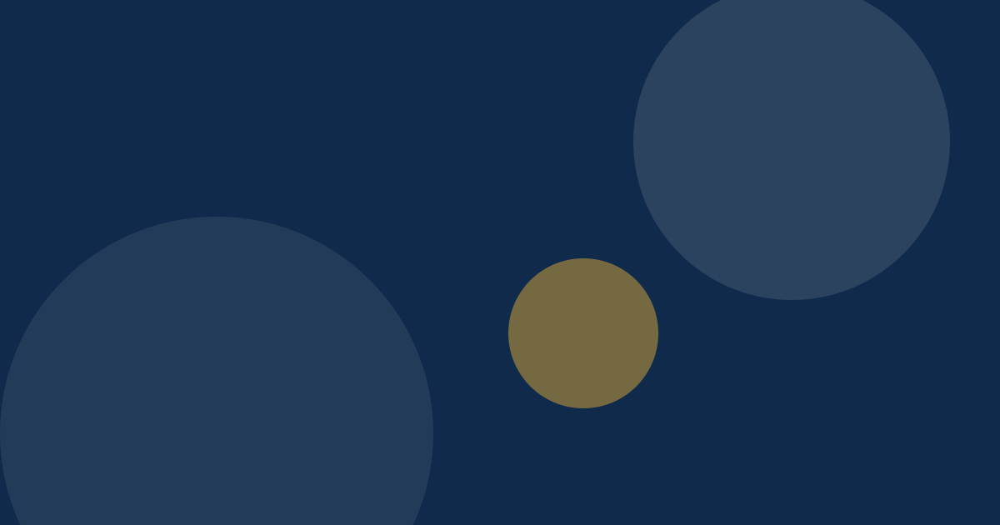

What Does a Truly Meaningful Life Look Like?
Meaning looks different for everyone. A reflective look at values, purpose and living with intention.

There is no single answer
For some, meaning comes from family. For others, from work, faith, service or creativity. This article offers reflections, not rules.
Values as a compass
When daily choices match what we value, life tends to feel more settled. A simple exercise: write down three things you would regret ignoring, then check whether your week makes room for them.
Meaning is built daily
Purpose is rarely found in one moment. It grows through small acts of care, learning and honesty. Explore how self-respect supports connection and how financial calm creates room to live intentionally.
Key takeaways
- Meaning is personal.
- Values guide choices.
- Build it through small daily actions.
This article shares general information and personal perspective. It is not medical, financial or professional advice. See our disclaimer.